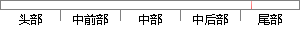

2、对恶意域名相关流量的快速提取进行了研究，针对恶意域名中在流量中占比最大的三类恶意域名，DNS放大攻击涉及域名、随机子域名攻击涉及和DGA域名，借鉴了域名信誉系统的评分方法以及机器学习的方法，分别设计了有效的提取方案，并通过大量的实验对参数进行选择；
片段位置图

相似结果|
1
原句片段：以及机器学习的方法，分别设计了有效的提取方案，并通过大量的实验对参数进行选择；
相似片段 1：本设计并实现了一个基于机器学习技术的 Hadoop 作业参数调优方法并在本文搭建的...2 2 .1 基于 经验规律 的方法 分析 通过大量的实验以及自身对 Hadoop 系统...
|
※ 片段修改建议 ※
近似词参考：- 恶意：歹意
- 相关：相干
- 研究：钻研
- 恶意：歹意
- 恶意：歹意
- 攻击：进犯 进击 打击 袭击
- 涉及：触及
- 攻击：进犯 进击 打击 袭击
- 涉及：触及
- 借鉴：鉴戒
- 信誉：诺言 信用
- 系统：体系
- 方法：方式 要领 法子
- 以及：和
- 机器：机械 呆板
- 学习：进修
- 方法：方式 要领 法子
- 分别：别离 划分 离别
- 设计：计划
- 有效：有用
- 通过：经由过程
- 实验：尝试 实行 试验
- 进行：举行
系统自动生成语句：2、对歹意域名相干流量的快速提取举行了钻研，针对歹意域名中在流量中占比最大的三类歹意域名，DNS放大进犯触及域名、随机子域名进犯触及和DGA域名，鉴戒了域名诺言体系的评分方式和机械进修的方式，别离计划了有用的提取方案，并经由过程大量的尝试对参数举行选择；
注：本片段修改建议为系统自动生成，仅供参考。